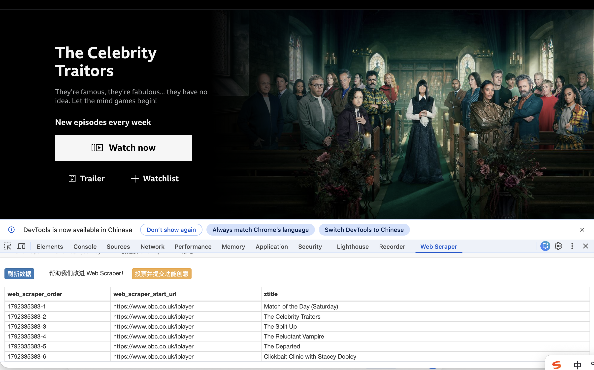
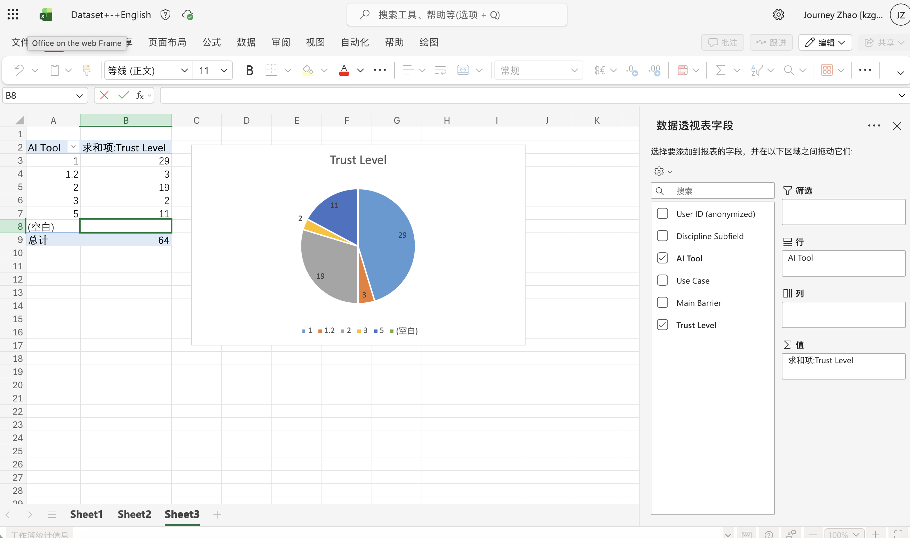
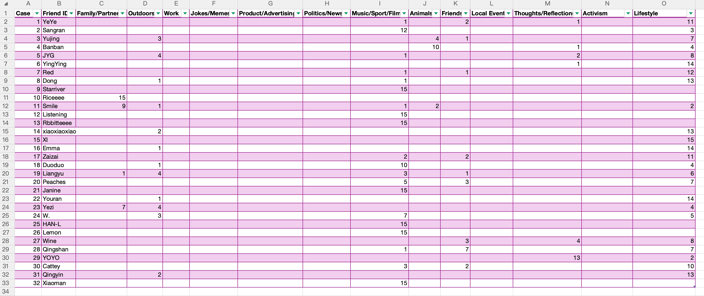
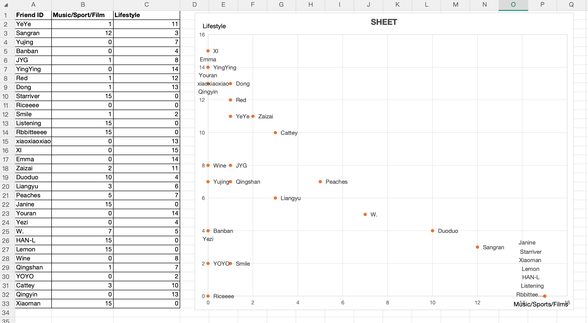
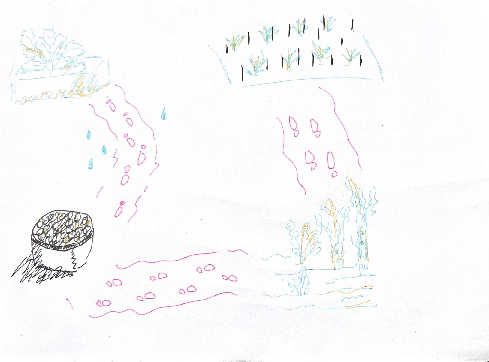

02 / REFLECTION
Weekly reflections.
To record my learning, ideas and reflections throughout the Digital Practice studies.
Contents
Week 2
WEEK 02 / REFLECTION
Week02 First workshop
It is interesting to create a piece of work and manage the operation logic. Actually, the course is a little bit similar to DW, which I learned during my postgraduate studies and that made my workshop easier to understand. However, I still made a funny mistake during the workshop which was that I forgot to press Save in VS Code. Well, at lease I will never do that again.
In this week’s reading, one point struck me deeply. Gillespie mentions Silverstone’s opinion: “Once technologies are offered to the public, they undergo a process of ‘domestication.’” I think this theory of “domestication” can also be seen as a process of selection and adjustment. Users develop technological tools, exchange ideas within communities, and develop their own technologies. That providing these tools “additional meanings that the technology provider could not have anticipated.” As their use deepens, some users become more devoted fans, while others stop using it. I was pleasantly surprised to read the term “domestication”, because it has a great summary of the behavior that everyone could do when facing any platform and gives meaning to this process.
The technology develops so fast. AI even could not write code when I was learning DW, and it could do that at lease one year ago cause I used AI to build up a questionnaire test during my internship. But I still need to amend some details because AI’s code could not run at all. So learning the rules of webpage making is still essential nowadays, because people should have the ability to type code just based on our brain and hand. At lease I should learn the establish logic even if I cannot do it.
↑ Back to contentsWeek 3
WEEK 03 / REFLECTION
Week03 Web Scraping
This week’s workshop focuses on web scraping. Compared with last week', this week's content is more complex and a new learning experience for me. Before this, I had little knowledge of web scraping, so it was difficult to understand the logic behind it and the specific operation process at first.
In class, we tried using specialized web scraping software to collect data. Through practical operations, I have a more intuitive understanding of the basic process of web scraping, and I also began to understand how to find the information I need from a web page. I can obtain a large amount of comprehensive information from the scraping results. Compared with direct searching, web scraping “puts you in control of the precise nature of data extracted, the format in which it is stored, the time of the collection” (Venturini and Rogers, 2025). When scraping the main page, I can see that subheadings are clearly listed in the results, which is faster and more accurate than searching or manual collection. At the beginning, I did not fully understand the operation logic of each step. But as the task progressed, I could understand the role of each step from the effect after the step. Compared to simply reading relevant theoretical knowledge, completing a complete data scraping process myself made it easier for me to understand how this technology works. In addition to this, we also learned about writing code in Python for web scraping. But accomplishing the same task by writing code is significantly more difficult than using off-the-shelf software.
Through this week's study, my biggest gain is that I have a preliminary understanding of web scraping, and I have begun to realize that data collection in digital media research is not a completely automated step without a thinking process. Whether using scraping software or writing code in Python, we need to first understand what data we want to collect and how we should obtain it. Different tools also differ in operational difficulty and flexibility. Learning digital methods requires not only understanding relevant concepts, but also gradually building an understanding of technical processes through practical operations.
This week’s reading also mentioned Venturini and Rogers’s reflections on the ethics and legality of web scraping. As the article notes, “Whether this actually makes scraping illegal, however, is still an open (and much debated) question.” Platforms prohibit web scraping while simultaneously scraping information from other platforms and justifying this behavior. This seems contradictory, while it is almost like a convention that everyone does it. As a result, it seems that no information is protected.

↑ Back to contentsWeek 4
WEEK 04 / REFLECTION
Week04 Data Collection
We had our first group experience this week, and I was lucky to find some interesting group members.
In the process of collecting data, It is common to meet some moral and ethical problems. I think the most important issue is the question of "permission." Whether to accept the use of one's data is a very personal matter: someone cares and someone doesn’t. We’re not sure about if the users are willing to allow researchers to collect their data. So whether we can collect someone's data may depend on whether they agree with the platform's rules, but perhaps they will not stop using the platform. Users and platforms may be somewhat dissatisfied with each other, but they continue to cooperate.
As I discussed this issue further, I realized that whether data is publicly accessible is not entirely the same as whether researchers should use it. Even if the content posted by some users can be seen by anyone, it does not mean that they necessarily expect that the content will be collected, organized, or even used for academic analysis. Therefore, ethical issues in data collection may be more complex than we initially thought. We need to consider not only whether it is technically possible to obtain data, but also whether it is reasonable to obtain these data, and what responsibilities researchers should bear for the use of data.
Crawford（2021） illustrates a situation: “In addition to dispensing with the need for staged photo shoots, those responsible for assembling datasets presumed that the contents of the internet were theirs for the taking, beyond the need for agreements, signed releases, and ethics reviews.” In later articles, Crawford cites many examples of people ignoring the opinions of those being investigated and failing to seek their consent, especially in the collection of facial data. These incidents occurred earlier than the present day, and people today are more sensitive to and place greater importance on their privacy and portrait rights, which is also a sign of social progress. Crawford（2021） also mentioned that “ ‘data’ has become a bloodless word; it disguises both its material origins and its ends. And if data is seen as abstract and immaterial, then it more easily falls outside of traditional understandings and responsibilities of care, consent, or risk.” As investigators, we should also pay attention to more comprehensive considerations. Data is actually comes from people and represents their emotions, views, and other information, which means it should be treated with caution rather than simply regarded as capital or a resource.
During the discussions in the workshop, our group members have talked about some special sences like disability. It seems that disability is not related to the usage of AI, but I think it deserves to discussed in order to access the situation of blind and deaf-mute individuals because AI can help them to a greater extent. We haven't finalized the keywords yet, so that is just an idea. I've started gathering data on specific topics from the website, hoping to present it smoothly during the workshop next week.
↑ Back to contentsWeek 5
WEEK 05 / REFLECTION
Week05 Data Visualization
This week we had a very meaningful group discussion. Looking back on the group work last week, we initially thought that we had considered the research topic and data collection direction more comprehensively. However, after practical operations and further discussions, we found that there were some problems with the original data classification and research scope.
From the beginning, we selected a variety of different AI tools as research objects, hoping to understand the use of AI by British college students and their attitudes towards different AI products by comparing these different tools. However, when we started collecting data, we discovered that not all AI tools were widely used among UK university students. Although we obtained a lot of posts, some of the data was not closely related to our research goals, so it was difficult to extract truly valuable information from the large number of results.
Our team mainly scraped posts from Reddit about the use of AI by British college students, and collected about 100 pieces of data respectively for ChatGPT, DeepSeek, Gemini and Claude. After obtaining these data, we classified the posts according to several main dimensions according to different research purposes. During this process, I gradually realized that data classification is not simply labeling existing information, but a process in which researchers reorganize information based on their own research questions. A post might be about trust in AI, practical experience and academic use. If we classify based on only one of these aspects, we risk overlooking other valuable aspects of the message. Therefore, how to set reasonable classification standards and how to deal with the connections between different categories are very important part of data analysis. Thanks to reminds from Feigenbaum and Alamalhodaei (2020) , we had already established a fairly comprehensive set of criteria when we first created the table and prepared for the classification, and it avoided the trouble of subsequent revisions. This made me realize that data does not exist completely independent of the researcher. The data we choose, the keywords we use, and the criteria by which we categorize the data all affect the phenomena we can ultimately observe.
Beyond the data itself, this task also made me to reconsider the ethical issues involved in data collection. Although Reddit posts are publicly available and can be accessed through web scraping tools, this does not necessarily mean that the posters want their content to be collected and analyzed by researchers. This is especially true when posts involve relatively sensitive topics such as students’ learning experiences, personal feelings, or even academic misconduct; in such cases, we should handle the information with greater caution. Researchers need to consider how to protect posters’ privacy and whether usernames and other information that could identify individuals should be hidden when presenting research findings. Publicly accessible data and obtaining explicit consent from individuals are not entirely the same thing. Even if the content can be easily obtained by technology, we still need to consider whether its use is appropriate.
Data visualization is not entirely unfamiliar to me, because I have encountered related content in my studies and work in the past. However, pivot table is a relatively new approach for me. With pivot tables, we can summarize originally scattered data according to different classification criteria, making it easier to observe the usage of different AI tools and the relationship between students’ trust in AI and its specific uses. Compared with reading a large number of posts directly, organized data and charts can help us identify more obvious trends quickly and make discussions among group members more concrete. However, data visualization is not as simple as just creating a chart. First, the classification of the data itself must be clear enough; otherwise, the chart may not accurately present the information we want to convey. Second, there may be overlaps between different categories, and some posts may contain multiple different viewpoints and purposes. If we oversimplify the data to make the chart more concise, we may lose some important information from the original posts.
Reading Feigenbaum and Alamalhodaei’s (2020) opinions on semiotics in data storytelling made me think of some issues I had not noticed before. In my previous studies, I had made many PowerPoint presentations and added small symbols or illustrations when explain data. But my main purpose was simply to make the slides look more attractive and prevent them from appearing too plain and tedious. I had never thought about them in terms of semiotics, nor had I considered that these small icons and simple drawings could become part of how data presentation. In particular, Feigenbaum and Alamalhodaei (2020) argues that “This is important when visually representing sensitive subjects or creating icons that will travel across languages and cultures” left a deep impression on me. When cultures do not communicate with one another, simple symbols are indeed easier for readers to understand than words or language. For instance, the first words that a non-native English speaker learns are often “apple” or “banana,” and at that time, teachers usually show these words together with pictures of apples and bananas.

↑ Back to contentsWeek 6
WEEK 06 / REFLECTION
Week06 Algorithmic Identity
This week’s workshop showed that social media platforms collect far more personal information than just what we actively post; it also includes a large amount of data generated through our everyday browsing and interactions. The information we share with platforms and third parties is far more extensive than we might imagine. In exploring this, I found that Rednote’s Personal Information Collection List and Third-Party Information Sharing List are both placed relatively low on the settings page and are displayed in a small font, making them easy for users to miss. By contrast, the entry points for Douyin’s relevant policies and information records are easier to find. Although platforms provide explanations regarding the collection and use of personal information, whether users can easily locate and truly understand this content is also an important part of information transparency. In theory, platforms have fulfilled their obligation to inform users, but are the subtle manipulations around visibility exploiting loopholes in the rules?
As I explored my personal activity records further, I found that Douyin allows users to view their browsing history from the past 48 hours, and can even track video watch progress, with filters for long videos and short videos. What surprised me even more was that Rednote actually lets users view content they browsed two months ago, far beyond my initial expectations. The article of Sumpter(2018) told me that Facebook is recognizing user’s emotions and level of engagement through facial expressions and interaction. The computer tasks can give some insight into our state of mind. The digital footprints we leave behind when using social media may be more complete than we realize. Many seemingly brief browsing sessions may actually serve as the basis for platforms to continuously analyze users, while the content we actively post is only a small part of our personal data. As Cheney-Lippold(2017) mentioned, we live in a world of ubiquitous networked communication and ubiquitous surveillance.
While studying how algorithms understand users, I looked at the interest profiles Google generates based on individual browsing and usage records, but many of the categories did not align with my actual self-perception. The identity profiles constructed by algorithms cannot represent a person. Platforms identify users’ interests and habits through their ongoing browsing and interaction behaviors, but these behaviors do not necessarily reflect genuine, stable personal interests. A casual search may be interpreted by an algorithm as a particular personal preference. “We are ourselves, plus layers upon additional layers of what I have previously referred to as algorithmic identities.”(Cheney-Lippold, 2017)As a result, the identity constructed by an algorithm is more likely tobe a hypothesis formed by a platform based on specific data and computational methods, and this hypothesis is also always changing with the development of data. Cheney-Lippold made me realise this point, as he mentioned, “Our algorithmic identities are based on near-real-time interpretations of data. And as we produce more and more pieces of data, these interpretations must necessarily change.”
Overall, workshop in this week has made me realize that algorithms are not only collecting and processing personal information; they are also continuously defining and categorizing users through data. It is worth considering whether these categories affect what we are able to see and how we interact with the digital world when platforms build identity profiles based on limited data. If platforms’ understanding of us is inherently biased, should we make changes or break out of the data based information cocoons in which we live?
↑ Back to contentsWeek 7
WEEK 07 / REFLECTION
Week07 Identity Research
Digitization means that in an atomic sense, we can no longer be called ourselves, but are constructed the identity in the data sense (Cheney-Lippold, 2017). I can feel the influence of digitization according to reviewed last week’s task of researching the Douyin content of 32 friends and fans. I found that the classification criteria I used were actually relatively rough. Many people's accounts post short single-person videos such as selfies and hand dances. I can only classify them into the lifestyle category. But this type of classification can only reflect what users are willing to publish publicly and does not truly represent their lives. For example, if an account posts content related to children for a long time, it only means that the user chooses to share the content on social platforms, but it does not mean that his life completely revolves around children. This made me realize that similar problems may arise when platforms build identity profiles through users’ public behaviors: they can only see part of a person’s life, rather than their complete personal identity. Our personalities and identities are all compressed into data, as Cheney-Lippold (2017) noted, “one of the primary terms of an algorithm is that everything is represented as data.”
I have also found that a platform’s understanding of users has a lot to do with how users use the platform. I usually use Rednote as a search tool, so the content on the recommended page is relatively cluttered. However, Douyin is my main entertainment platform, so its recommended content is relatively more in line with my real interests. Therefore, the same person may present completely different interest profiles on different platforms. What the algorithm identifies is not necessarily a stable personal identity, but may also be the behavioral characteristics of the user on a specific platform and usage scenario.
Another issue that impressed me is that users’ real interests can be very specific, but the interest categories provided by the platform are often broad. For example, the platform determines that a user is interested in maternal and infant content. But in fact, he just wanted to know about outdoor places suitable for taking children, and did not want to be exposed to information about milk powder and parenting products. He will lend out content that he is not interested in through the platform’s push mechanism. Users may be able to block tags they are not interested in, but it is difficult to proactively and precisely decide what they want to see. Users are unclear about how algorithms behave, and they do not know how their data will be processed and analyzed, or how it will affect their own experience. This creates a “sense of helplessness” (Sumpter, 2018), and the specific behavior of algorithms is obscured within a “black box.”
On the one hand, Sumpter(2018) uses his experiment of classifying 32 of his friends to demonstrate how algorithms “see” us. On the other hand, he also uses examples such as Google advertisements and COMPAS to discuss whether algorithms are truly fair and accurate. However, as he himself points out, algorithms are not as useful as they are often claimed to be. Algorithms are developing rapidly, but their limitations and problems are also being increasingly exposed. In this time, I am willing to place more trust on human beings. It is always people who decide how algorithms are used, whom they serve, and who should take responsibility for their consequences. As Julia Angwin has shown, it is people who take the initiative to open the black box, expose the biases within it, and push platforms to make changes. I started studying journalism and media before AI became widely used, and I used to take pride in my video editing skills. However, these skills can now be replaced by machines. During this time, I have witnessed the significant changes in the media industry. Nevertheless, I believe that real-life experiences and emotions, as well as people's questions and concerns about fairness are still difficult for machines to replace. Data certainly brings us greater efficiency and convenience, but it also creates risks and unfairness. Ultimately, data remains a tool created and used by human beings. How we use it, and how we take responsibility for the consequences of using it are still depend on us.


↑ Back to contentsWeek 8
WEEK 08 / REFLECTION
Week08 Digital Ecologies
This week's workshop allowed me to try a different way of observing and understanding the environment around me. At the beginning of the class, we carried out a sensory exercise using common objects such as grapes, oranges, biscuits and coriander. We experienced them through different senses, including sight, touch, smell, taste and hearing. This exercise made me realise that, even when we are familiar with something, we can still notice many details that are usually overlooked in some strange methods like its texture, smell and taste. We are usually used to quickly recognising and judging things around us, but this exercise encouraged us to slow down and focus on different sensory experiences. It also helped me realise that each sense can provide us with different information.
Afterwards, we applied this way of observing to the environment around the Roger Stevens Building. I chose the garden behind the building and drew a map based on the route I actually walked. During my observation, I first saw a box of plants, followed by some beans that were beginning to grow, a lettuce field, and finally a neatly arranged seedling nursery with many small sticks placed in it. I used different colours and lines to record the plants and planting areas that I saw along the way. Through this process, I noticed that different parts of the same garden contained plants at different stages of growth and involved different planting methods. Compared with simply observing the garden as a whole, recording these scenes according to my walking route allowed me to pay more specific attention to the characteristics of different areas, as well as the relationship between the plants and human planting activities.
When I looked back at my drawing process, I realised that I still relied quite heavily on sight to understand and record the environment. As Schafer (1994) mentioned, ear has gave way to the eye as the most important gatherer of information hundreds of years ago. The class encouraged us to pay attention to different aspects, such as sounds, smells, temperature and touch, the content I eventually included in my map was still mainly made up of plants and spaces that I could directly see. This made me realise that our understanding of the environment is easily dominated by sight, which can cause us to overlook the information provided by other senses.
This task also gave me a different understanding of maps. Traditional maps usually focus on accurate locations and spatial relationships, while sensory maps pay more attention to how individuals experience a particular place. My map was not intended to provide a complete and geographically accurate representation of the garden. Instead, it recorded the scenes I noticed along the way and the order in which I encountered them during my walk. Even when different people walk through the same garden, they may draw completely different maps because of differences in their routes and the senses they pay attention to. I think the value of this method is that it allows personal observations and sensory experiences, which would not normally appear on traditional maps, to become information that can also be recorded and expressed.

↑ Back to contents